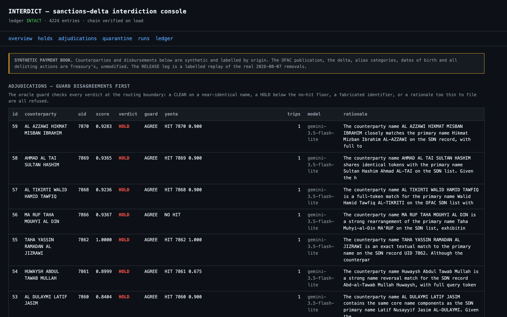

All Things Agentic·Fortified Enterprise Fleet·Solo build·MIT
For judges.
One page with exactly one reader. Everything below is verifiable from this browser tab — no account, no key, no clone. Where something cannot be verified that way, it says so instead of being dressed up.
When Treasury updates the OFAC list, it re-screens the whole payment book, holds true hits, clears lookalikes with written reasons, releases funds on delisting, and drafts the 10-day blocking report — unattended.
That sentence is unchanged across the README, the landing page and the Devpost entry. If the rest of this page does not support it, the rest of this page is wrong.
The 30-second path
Four clicks, in order.
Nothing to install. Each card opens one artifact and tells you what you are looking at before you get there.
-
0:00
The number
Top-1 0.995 against the independent oracle’s 0.840 — measured on names that are not on the SDN list character-for-character. The only screening number worth reading.
-
0:10
The console
Real adjudications: the model’s written rationale, its citation, and the oracle’s independent verdict on the same row. Captured from the running console, not drawn.
-
0:20
The ground-truth grade
59 holds graded against strata the screening path cannot see: 1 missed hit in 60, 0 frozen grantees in 41.
-
0:25
PROVENANCE.md
The SHA-256 of the OFAC publication every number above was computed against. Hash Treasury’s own file and compare it yourself.
{kind=link}
There is no hosted application.
The fleet, Postgres and yente run locally — the free tier does not extend to Cloud Run and no billing account was available. So the four clicks above are evidence, and make reproduce is execution. Neither is dressed up as the other, and the demo path is not a hosted URL that would quietly become a mock.
The receipts
Every number is printed by a command, not typed in.
All figures are against the 08/07/2026 OFAC publication — 19,199 records, 4,393 OFAC-flagged weak aliases, the snapshot the sentinel book is sealed to. Each command sits above its own output in DEMO.md .
Top-1 — true uid ranked first, on 400 deterministically perturbed names. make challenge-set
yente’s own recall on the identical set — the independent oracle, and the bar to clear.make challenge-set
Recall — true uid present anywhere in the candidate set. make challenge-set
Frozen across 59 holds in the graded run, every decision written to the hash-chained ledger.scripts/run_rescreen.py
Tests, including OFAC’s own publshInformation schema typo,
pinned so a Treasury fix fails loudly.make test
p95 68.8 ms · p99 106.7 ms · full 400-counterparty book in 7.6 s.make bench
Decision quality — graded against ground truth the screening path cannot see
sentinel HOLD 30/30 lookalike CLEAR 25/25
variant HOLD 29/30 ordinary CLEAR 16/16
MISSED HITS 1/60 FROZEN GRANTEES 0/41101-row stratified sample · 59 held · 0 quarantined · ledger chain
INTACT · adjudicated by gemini-3.5-flash-lite. Read the strata carefully: all
59 adjudications came back HOLD, because a contradicting date of birth cuts a lookalike
below the adjudication bar before the model is ever consulted. The clears are the
deterministic plane’s work — see the limitations.
Agreement with the independent oracle, on every decision
| Outcome | Count |
|---|---|
| both flagged a hit | 58 |
| we held, yente missed | 1 |
| we cleared, yente flagged | 0 |

:8080 after a
re-screen. Every row carries the rationale, the citation and the oracle’s verdict
side by side.OFAC delta, archived by content hash
sha256 9403f40d9496… — full digests in
data/PROVENANCE.md
The reproduce command
The real path — it runs the thing being judged.
make reproduceInstalls, brings up Postgres + Elasticsearch + yente, indexes the oracle, applies the schema, runs the 343 tests, and prints the perturbed screening number.
For the adjudication and interdiction legs:
export GEMINI_API_KEY=... # free, no billing: aistudio.google.com/apikey
python scripts/load_book.py --truncate
python scripts/run_rescreen.py # what the timer starts on its own
python scripts/adjudication_quality.py
python -m interdict.console # evidence console on :8080Screen a name we never chose — this is the point of the command:
make challenge NAME="Ibrahim Al Rashid"
make challenge NAME="Abu Abbas" DOB="3 Mar 1990" # contradicting DOB kills the hitrun_rescreen.py refuses to run without a Gemini key.
It does not fall back to a test double, because a reproduce command that quietly disables the thing being judged is worse than one that fails loudly.
CI / deterministic replay — not the
product. --offline runs the deterministic plane alone and labels itself
as such on every line of output. That is what CI uses. It is named here only so it can
never be mistaken for the demo path above.
Honest limitations
Three that matter to anyone scoring this.
Six are listed in the README. These are the ones that would change a score if you found them yourself instead of reading them here.
- The model has never issued a CLEAR. Every clear in the graded book came from the deterministic plane, because a contradicting date of birth ends the question before adjudication is reached. The adjudicator is therefore exercised on confirmation, not on discrimination — read the grade above with that in mind.
- Decision quality is a 101-row stratified sample, not the full 536-row book. Free-tier Gemini allows a fixed number of requests per model per project per day; the full book would take several days of quota. The screening numbers are unaffected — those are measured across all 400.
- The release leg is a labelled REPLAY and says so on screen. The eight delisted parties are already gone from the 08/07 publication, so a live release cannot be staged against today’s list without pretending. Their uids, names, programmes and removal actions all come from Treasury’s archived delta; the payment book they sit in is synthetic and labelled everywhere it appears.
Also worth stating plainly: nothing runs on Google Cloud
compute — Firestore holds the audit trail, the agents, Postgres and yente run
locally. Vessels and aircraft are screened by name only. One transliteration in thirty
(AZIZ ATRIQ, score 0.659) falls below the adjudication bar. And yente’s
own recall on the perturbed set is 0.840, so part of the agreement gap above is the oracle
missing, not us.
What is real, and what is not
| Real — none of it ours | Ours, and labelled synthetic |
|---|---|
The OFAC SDN publication (08/07/2026, 19,199 records); the
/changes/latest delta and its 18 additions / 8 removals; every alias
category including the 4,393 OFAC-flagged weak aliases; every date of birth; every
sanctions programme; the delisting actions. Archived by content hash in
data/archive/. |
The payment book. A real NGO’s grantee ledger is not ours to publish.
Counterparties carry an origin column, and both the console and the
demo label them on screen wherever they appear. |